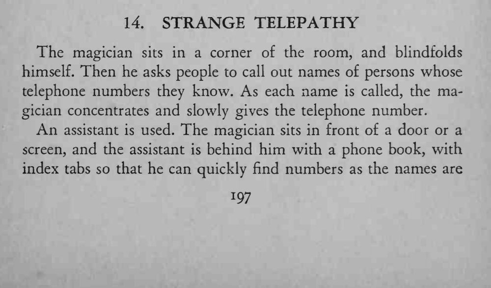
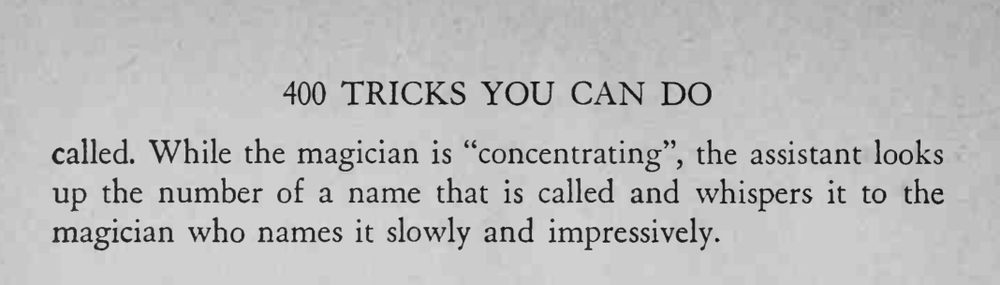

魔术师蒙着眼坐在屋角，观众随口报出人名，他略一凝神，就能慢慢说出对方的电话号码。
助手翻书、耳语都不能被观众看见或听见，身后一定要有遮挡。


The magician sits in a corner of the room, and blindfolds himself. Then he asks people to call out names of persons whose telephone numbers they know. As each name is called, the magician concentrates and slowly gives the telephone number. An assistant is used. The magician sits in front of a door or a screen, and the assistant is behind him with a phone book, with index tabs so that he can quickly find numbers as the names are called. While the magician is "concentrating", the assistant looks up the number of a name that is called and whispers it to the magician who names it slowly and impressively.